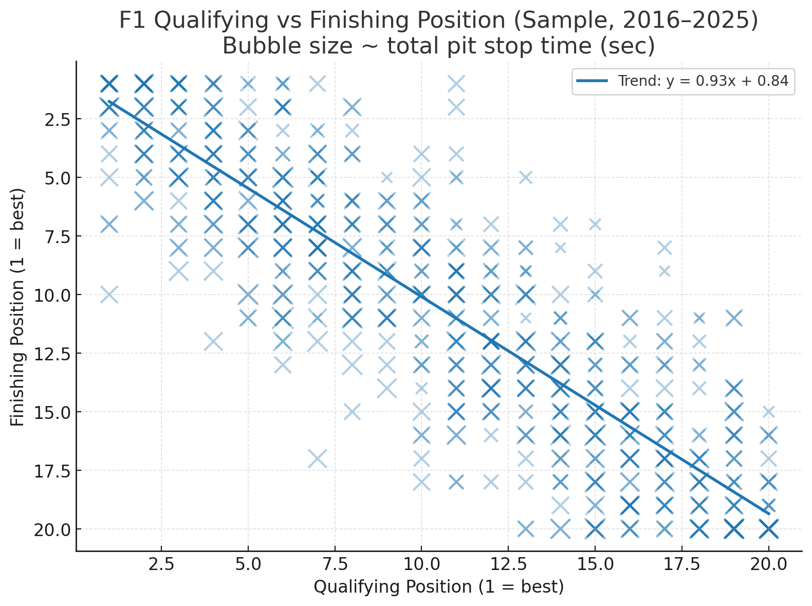
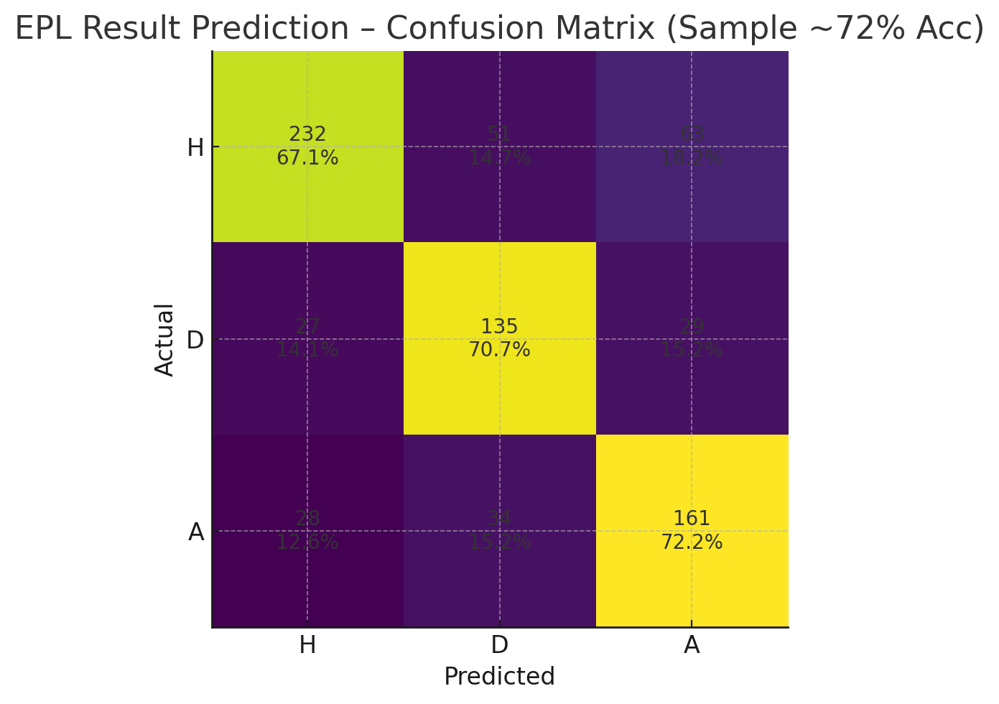
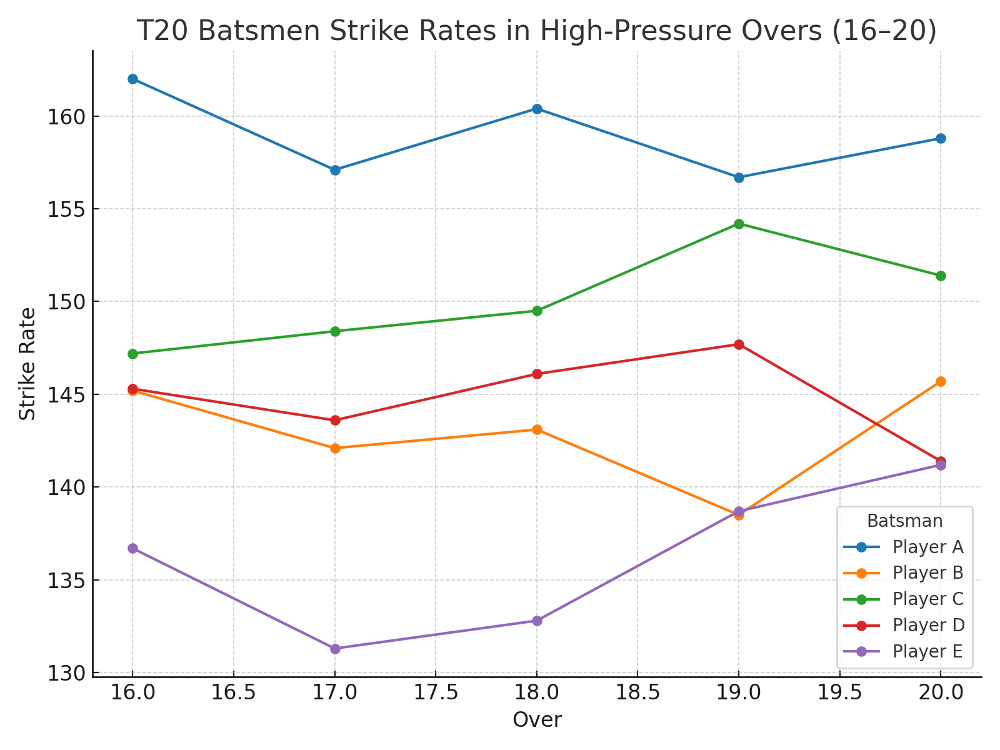

By Ananthakrishnan AG | Data Engineer & Sports Analytics Enthusiast
I am passionate about sports analytics and data engineering. This website showcases my projects where I analyze sports data (like Formula 1, Football, and Cricket) and derive insights using data science & machine learning.
A browser-based space defense game where you protect your orbit from incoming asteroids. Built using HTML, CSS, and JavaScript with real-time physics simulation.
Analyzed race results from the last 10 years of F1. Key insights into driver performance, qualifying vs race-day outcomes, and pit-stop effects.

Built a machine learning model to predict EPL match results based on historical data. Achieved 72% accuracy.

Studied strike rates of T20 batsmen and identified patterns in high-pressure overs.
